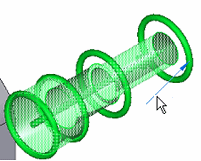
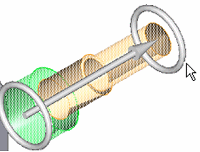
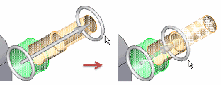
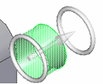

Edit a bolt connector
You can use the bolt connector handle to change the connection search distance, adding or removing holes on adjacent parts or surfaces. The actual composition of the edit handle in the model depends upon the bolt or fastener type, the number of holes it connects, and whether it is located on a part or a sheet metal surface. The following images show how to edit a bolt connector that connects holes though three parts in an assembly.
-
In the graphics window, click the connector edit definition handle of the bolt connector you want to modify.

-
Click the white tori at the arrow end of the bolt connector to activate it for editing.

-
Drag the tori along the connector axis.
-
To include another hole in the bolt connector, stretch the handle.
-
To remove a hole from the bolt connector, shorten the handle.

-
-
Right-click to apply the change.

How do I
Create connectors based on assembly relationshipsCreate assembly connectors using the Auto command
Create manual connections between faces or surfaces
Replace target and source connection regions
Change connector region direction
Create bolted connections
Learn more
Assembly connectorsTarget and source connector regions
Assembly connector handles, labels, and symbols
Glue and no penetration contact connectors
Thermal connectors
Bolt connectors
Bolt connector simulation results
Look up more details
Auto command barAssembly Connector command bar
Assembly Connector Properties dialog box
Bolt command bar